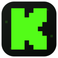

KICK TVLITE · TIZEN 3
Připraveno pro starší TV
LIGHTWEIGHT EDITION
Kick pohodlně
i na starší televizi.
Jednoduché přehrávání a živý chat bez zbytečné zátěže.Najít streamera
Stačí část jména nebo adresa kanálu
Z textového pole odejdeš šipkou doprava nebo dolů.